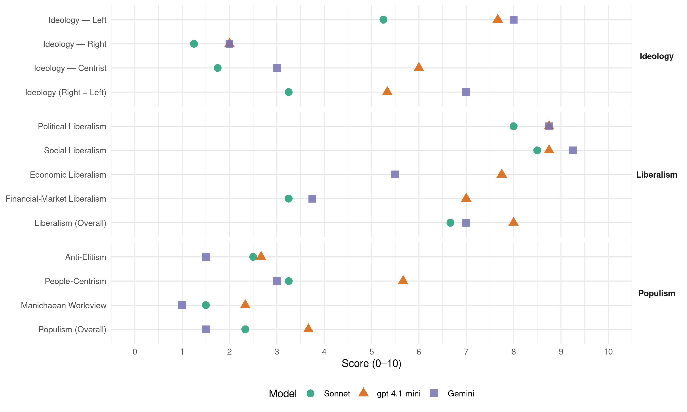

SPD (Germany, 2017)
manifesto_id 41320_201709
Get full text: This site shows derived annotations and short verbatim quotes only. The full manifesto text is © Manifesto Project / WZB — obtain it via manifesto-project.wzb.eu using the manifesto_id above.
Headline scores
| Dimension | Sonnet | gpt-4.1-mini | Gemini |
|---|---|---|---|
| Populism (Overall) | 2.3 | 3.7 | 1.5 |
| Anti-Elitism | 2.5 | 2.7 | 1.5 |
| People-Centrism | 3.2 | 5.7 | 3.0 |
| Manichaean Worldview | 1.5 | 2.3 | 1.0 |
| Ideology (Right − Left) | 3.2 | 5.3 | 7.0 |
| Liberalism (Overall) | 6.7 | 8.0 | 7.0 |
| Political Liberalism | 8.0 | 8.8 | 8.8 |
| Social Liberalism | 8.5 | 8.8 | 9.2 |
| Economic Liberalism | – | 7.8 | 5.5 |
| Financial-Market Liberalism | 3.2 | 7.0 | 3.8 |
Evidence per dimension
Economic Liberalism
Gemini · score 6.0 · mixed · chunk 1
“Unternehmen in einer starken sozialen Marktwirtschaft”
Arbeitnehmerinnen und Arbeitnehmer, ebenso wie selbstbewusste Gewerkschaften und erfolgreiche Unternehmen in einer starken sozialen Marktwirtschaft zusammen. Wir sind stolz auf unseren
Gemini · score 5.0 · verified · chunk 2
“den Wert der Arbeit in unserer sozialen Marktwirtschaft”
Es geht um einen der wichtigsten Werte in unserer sozialen Marktwirtschaft: den Wert der Arbeit. Dass Arbeitsleistung im Alter erkennbar bleibt und sozialer Abstieg
Gemini · score 6.0 · verified · chunk 3
“faire internationale Handelsbeziehungen und für”
den Ausbau der Entwicklungszusammenarbeit, faire internationale Handelsbeziehungen und für die weltweite Achtung der Menschenrechte
Gemini · score 6.0 · mixed · chunk 4
“Offene Märkte sind gut, dort muss”
Nationale Alleingänge und Protektionismus versprechen keinen Erfolg. Offene Märkte sind gut, dort muss aber auch frei von Wettbewerbsverzerrungen gehandelt
gpt-4.1-mini · score 8.0 · verified · chunk 1
“Hier arbeiten motivierte Arbeitnehmerinnen und Arbeitnehmer, ebenso wie selbstbewusste Gewerkschaften und erfolgreiche Unternehmen in einer starken sozialen Marktwirtschaft zusammen.”
…Unser Land ist heute demokratischer, offener, moderner und freier als jemals zuvor. Hier leben engagierte Menschen in ihren Familien, mit Freunden und Nachbarn. Hier arbeiten motivierte Arbeitnehmerinnen und Arbeitnehmer, ebenso wie selbstbewusste Gewerkschaften und erfolgreiche Unternehmen in einer starken sozialen Marktwirtschaft zusammen. Wir sind stolz auf unseren demokratischen Rechtsstaat…
gpt-4.1-mini · score 7.0 · verified · chunk 2
“Wir wollen die besten Schulen, eine gebührenfreie Kinderbetreuung, moderne Infrastruktur”
Wir wollen die besten Schulen, eine gebührenfreie Kinderbetreuung, moderne Infrastruktur in der Stadt und auf dem Land und schnelles Internet für alle.
gpt-4.1-mini · score 8.0 · verified · chunk 3
“wirtschaftliche Wettbewerbsfähigkeit unseres Kontinents verbessern”
Wir wollen Europa aus der Wachstumsschwäche herausführen, indem wir die wirtschaftliche Wettbewerbsfähigkeit unseres Kontinents verbessern und die viel zu hohe Arbeitslosigkeit vor allem in Süd- und Westeuropa bekämpfen.
gpt-4.1-mini · score 8.0 · verified · chunk 4
“Wir setzen uns für fairen Handel ein. Handelspolitik ist nicht nur ein Instrument der Wirtschaftsförderung”
Die SPD setzt sich für fairen Handel ein. Handelspolitik ist nicht nur ein Instrument der Wirtschaftsförderung. Im Kern geht es um die Frage, nach welchen Regeln wir in einer globalisierten Welt leben wollen. Nationale Alleingänge und Protektionismus versprechen keinen Erfolg. Offene Märkte sind gut, dort muss aber auch frei von Wettbewerbsverzerrungen gehandelt werden.
Sonnet · score 5.0 · mixed · chunk 1
“soziale Marktwirtschaft ist ein Erfolgsmodell”
Trotz aller Krisen in den vergangenen Jahren zeigt sich: Unsere soziale Marktwirtschaft ist ein Erfolgsmodell. Unternehmen sorgen bei der Beschäftigung für ein historisches Rekordniveau.
Sonnet · score 4.0 · mixed · chunk 2
“nicht nur vom Markt bestimmt werden”
Sie dürfen in einem solidarisch finanzierten System aber nicht nur vom Markt bestimmt werden, sondern müssen auch ethisch vertretbar sein. Deshalb soll auch in Zukunft immer wieder neu bestimmt werden, ob neue Medikamente sicher und notwendig sind.
Sonnet · score 6.0 · mixed · chunk 3
“wirtschaftliche Wettbewerbsfähigkeit unseres Kontinents verbessern”
Wir wollen Europa aus der Wachstumsschwäche herausführen, indem wir die wirtschaftliche Wettbewerbsfähigkeit unseres Kontinents verbessern und die viel zu hohe Arbeitslosigkeit bekämpfen.
Sonnet · score 6.0 · mixed · chunk 4
“Offene Märkte sind gut”
Nationale Alleingänge und Protektionismus versprechen keinen Erfolg. Offene Märkte sind gut, dort muss aber auch frei von Wettbewerbsverzerrungen gehandelt werden
Financial-Market Liberalism
Gemini · score 4.0 · verified · chunk 1
“Kontrolle und Aufsicht der Finanzmärkte”
Wir wollen international die treibende Kraft bei der Kontrolle und Aufsicht der Finanzmärkte werden. Kein Finanzmarkt, kein Finanzprodukt und
Gemini · score 3.0 · verified · chunk 2
“Wir wollen eine Umsatzsteuer für Finanzprodukte”
Union hat allerdings verhindert, dass wir hier schon zu ausgewogener Gerechtigkeit gekommen sind. Wir konnten nicht alle unsere Vorschläge durchsetzen. Wir werden diese in der neuen Bundesregierung aufgreifen. Wir wollen eine Umsatzsteuer für Finanzprodukte, die so genannte Finanztransaktionssteuer.
Gemini · score 3.0 · verified · chunk 3
“wirksame Besteuerung der Finanzmärkte muss”
gemeinsames Finanzbudget schaffen. Es ermöglicht Investitionsimpulse… Eine wirksame Besteuerung der Finanzmärkte muss zu dessen Finanzierung beitragen.
Gemini · score 5.0 · verified · chunk 4
“Internationalen Währungsfonds (IWF), der Organisation”
auch in weiteren wichtigen multilateralen Institutionen und Foren wie der Weltbank, dem Internationalen Währungsfonds (IWF), der Organisation für wirtschaftliche Zusammenarbeit und Entwicklung
gpt-4.1-mini · score 7.0 · verified · chunk 1
“Wir wollen international die treibende Kraft bei der Kontrolle und Aufsicht der Finanzmärkte werden.”
…Klare Regeln für die Finanzwirtschaft: Die Realwirtschaft, die Bürgerinnen und Bürger und auch der Staat brauchen ein Finanz- und Bankensystem, das sicher und verlässlich ist. Wir wollen international die treibende Kraft bei der Kontrolle und Aufsicht der Finanzmärkte werden. Kein Finanzmarkt, kein Finanzprodukt und kein Finanzakteur darf zukünftig ohne Regulierung und ohne Kontrolle sein…
gpt-4.1-mini · score 6.0 · verified · chunk 2
“Wir wollen eine Umsatzsteuer für Finanzprodukte, die so genannte Finanztransaktionssteuer”
Wir wollen eine Umsatzsteuer für Finanzprodukte, die so genannte Finanztransaktionssteuer. Diese muss im Rahmen der europäischen Kooperation mit einer breiten Bemessungsgrundlage und mit niedrigen Steuersätzen gestaltet sein.
gpt-4.1-mini · score 7.0 · verified · chunk 3
“Wir wollen eine wirksame Besteuerung der Finanzmärkte”
Mehr Wachstum und Investitionen in Europa setzen solide Einnahmen voraus. Deshalb muss Europa endlich Schritte zur Harmonisierung der Unternehmensbesteuerung und des Steuervollzugs in Europa auf den Weg bringen. Europa braucht Instrumente, um Steuervermeidung und Steuerbetrug effektiv zu bekämpfen. Wir wollen durchsetzen, dass Unternehmen dort ihre Steuern bezahlen, wo sie ihre Gewinne erwirtschaften.
gpt-4.1-mini · score 8.0 · verified · chunk 4
“Wir wollen mehr Transparenz in Form einer öffentlichen und länderbezogenen Berichtspflicht über Gewinne und darauf gezahlte Steuern für multinational agierende Unternehmen”
Steuerhinterziehung und -vermeidung sowie Finanzverkehr zu illegalen Zwecken müssen international bekämpft werden. Wir wollen mehr Transparenz in Form einer öffentlichen und länderbezogenen Berichtspflicht über Gewinne und darauf gezahlte Steuern für multinational agierende Unternehmen. Wir setzen uns für weitreichende internationale Regeln und eine verstärkte Zusammenarbeit auch in internationalen Organisationen wie den Vereinten Nationen, der Weltbank, dem Internationalen Währungsfonds und den G20 ein.
Sonnet · score 3.0 · verified · chunk 1
“Kein Finanzmarkt, kein Finanzprodukt und kein Finanzakteur darf zukünftig ohne Regulierung”
Wir wollen international die treibende Kraft bei der Kontrolle und Aufsicht der Finanzmärkte werden. Kein Finanzmarkt, kein Finanzprodukt und kein Finanzakteur darf zukünftig ohne Regulierung und ohne Kontrolle sein.
Sonnet · score 3.0 · verified · chunk 2
“Finanztransaktionssteuer”
Wir wollen eine Umsatzsteuer für Finanzprodukte, die so genannte Finanztransaktionssteuer. Diese muss im Rahmen der europäischen Kooperation mit einer breiten Bemessungsgrundlage und mit niedrigen Steuersätzen gestaltet sein.
Sonnet · score 3.0 · verified · chunk 3
“wirksame Besteuerung der Finanzmärkte”
Eine wirksame Besteuerung der Finanzmärkte muss zu dessen Finanzierung beitragen. Sie haben durch ihre Gier und verantwortungslose Spekulationen Europa an den Rand des Abgrunds geführt.
Sonnet · score 4.0 · verified · chunk 4
“Steuerhinterziehung und -vermeidung sowie Finanzverkehr zu illegalen Zwecken”
Steuerhinterziehung und -vermeidung sowie Finanzverkehr zu illegalen Zwecken müssen international bekämpft werden
Political Liberalism
Gemini · score 9.0 · verified · chunk 1
“freie Presse und eine unabhängige Justiz”
Wir kämpfen für die Freiheit, seine Meinung sagen und veröffentlichen zu können. Für eine freie Presse und eine unabhängige Justiz. Wenn wir uns umschauen in Europa
Gemini · score 8.0 · verified · chunk 2
“umfassende parlamentarische Kontrolle”
Wir benötigen rechtsstaatlich legitimierte, leistungsfähige Nachrichtendienste mit umfassende parlamentarische Kontrolle. Dabei soll das Bundesamt für Verfassungsschutz als Frühwarnsystem
Gemini · score 9.0 · verified · chunk 3
“repräsentative Demokratie wieder attraktiver und verteidigen”
Wir machen die repräsentative Demokratie wieder attraktiver und verteidigen sie mit Leidenschaft gegen rechte Antidemokratinnen
Gemini · score 9.0 · verified · chunk 4
“Eintreten für Freiheit und Demokratie”
Interessen- und Wertegemeinschaft verbunden, deren Fundament das Eintreten für Freiheit und Demokratie ist. In einer Zeit, in der diese Werte
gpt-4.1-mini · score 9.0 · verified · chunk 1
“Wir sind stolz auf unseren demokratischen Rechtsstaat, der die Würde des Menschen an erste Stelle setzt.”
…Hier arbeiten motivierte Arbeitnehmerinnen und Arbeitnehmer, ebenso wie selbstbewusste Gewerkschaften und erfolgreiche Unternehmen in einer starken sozialen Marktwirtschaft zusammen. Wir sind stolz auf unseren demokratischen Rechtsstaat, der die Würde des Menschen an erste Stelle setzt. Unser kulturelles Leben ist einzigartig…
gpt-4.1-mini · score 8.0 · verified · chunk 2
“Wir wollen, dass Straftaten schnell aufgeklärt und konsequent geahndet werden”
Wir wollen, dass Straftaten schnell aufgeklärt und konsequent geahndet werden und Bürgerinnen und Bürger ihre zivilrechtlichen Ansprüche zügig durchsetzen können.
gpt-4.1-mini · score 9.0 · verified · chunk 3
“Demokratie und Engagement: Wir machen die repräsentative Demokratie wieder attraktiver”
Demokratie und Engagement: Wir machen die repräsentative Demokratie wieder attraktiver und verteidigen sie mit Leidenschaft gegen rechte Antidemokratinnen und Antidemokraten. Deren pauschale Kritik an politischen Repräsentantinnen und Repräsentanten wird immer aggressiver und ihre Verschwörungstheorien immer gefährlicher.
gpt-4.1-mini · score 9.0 · verified · chunk 4
“Europa und die USA sind auf engste Weise in einer Interessen- und Wertegemeinschaft verbunden, deren Fundament das Eintreten für Freiheit und Demokratie ist”
Die USA sind und bleiben der engste Partner Deutschlands außerhalb Europas – dies gilt unabhängig davon, wer in den USA regiert. Europa und die USA sind auf engste Weise in einer Interessen- und Wertegemeinschaft verbunden, deren Fundament das Eintreten für Freiheit und Demokratie ist. In einer Zeit, in der diese Werte vielerorts unter Druck stehen und gefährdet sind, ist es umso wichtiger, diese Partnerschaft weiter zu stärken.
Sonnet · score 8.0 · verified · chunk 1
“Für eine freie Presse und eine unabhängige Justiz”
Wir kämpfen für die Freiheit, seine Meinung sagen und veröffentlichen zu können. Für eine freie Presse und eine unabhängige Justiz.
Sonnet · score 7.0 · verified · chunk 2
“Angriff auf die liberale Demokratie”
Die Gegner unserer offenen Gesellschaft haben sich neu formiert – in unterschiedlichen terroristischen und extremistischen Bewegungen. Wir benennen diese als das, was sie sind: eine Bedrohung für die westliche Welt, ein Angriff auf die liberale Demokratie.
Sonnet · score 9.0 · verified · chunk 3
“repräsentative Demokratie wieder attraktiver”
Wir machen die repräsentative Demokratie wieder attraktiver und verteidigen sie mit Leidenschaft gegen rechte Antidemokratinnen und Antidemokraten.
Sonnet · score 8.0 · verified · chunk 4
“Eintreten für Freiheit und Demokratie”
deren Fundament das Eintreten für Freiheit und Demokratie ist. In einer Zeit, in der diese Werte vielerorts unter Druck stehen
Liberalism (Overall)
Gemini · score 7.0 · verified · chunk 1
“freie Presse und eine unabhängige Justiz”
Wir kämpfen für die Freiheit, seine Meinung sagen und veröffentlichen zu können. Für eine freie Presse und eine unabhängige Justiz. Wenn wir uns umschauen in Europa
Gemini · score 6.0 · verified · chunk 2
“den Wert der Arbeit in unserer sozialen Marktwirtschaft”
Es geht um einen der wichtigsten Werte in unserer sozialen Marktwirtschaft: den Wert der Arbeit. Dass Arbeitsleistung im Alter erkennbar bleibt und sozialer Abstieg
Gemini · score 7.0 · verified · chunk 3
“repräsentative Demokratie wieder attraktiver und verteidigen”
Wir machen die repräsentative Demokratie wieder attraktiver und verteidigen sie mit Leidenschaft gegen rechte Antidemokratinnen
Gemini · score 8.0 · verified · chunk 4
“Eintreten für Freiheit und Demokratie”
Interessen- und Wertegemeinschaft verbunden, deren Fundament das Eintreten für Freiheit und Demokratie ist. In einer Zeit, in der diese Werte
gpt-4.1-mini · score 8.0 · verified · chunk 1
“Wir sind stolz auf unseren demokratischen Rechtsstaat, der die Würde des Menschen an erste Stelle setzt.”
…Hier arbeiten motivierte Arbeitnehmerinnen und Arbeitnehmer, ebenso wie selbstbewusste Gewerkschaften und erfolgreiche Unternehmen in einer starken sozialen Marktwirtschaft zusammen. Wir sind stolz auf unseren demokratischen Rechtsstaat, der die Würde des Menschen an erste Stelle setzt. Unser kulturelles Leben ist einzigartig…
gpt-4.1-mini · score 7.0 · verified · chunk 2
“Wir wollen, dass Straftaten schnell aufgeklärt und konsequent geahndet werden”
Wir wollen, dass Straftaten schnell aufgeklärt und konsequent geahndet werden und Bürgerinnen und Bürger ihre zivilrechtlichen Ansprüche zügig durchsetzen können.
gpt-4.1-mini · score 8.0 · verified · chunk 3
“Demokratie und Engagement: Wir machen die repräsentative Demokratie wieder attraktiver”
Demokratie und Engagement: Wir machen die repräsentative Demokratie wieder attraktiver und verteidigen sie mit Leidenschaft gegen rechte Antidemokratinnen und Antidemokraten. Deren pauschale Kritik an politischen Repräsentantinnen und Repräsentanten wird immer aggressiver und ihre Verschwörungstheorien immer gefährlicher.
gpt-4.1-mini · score 9.0 · verified · chunk 4
“Europa und die USA sind auf engste Weise in einer Interessen- und Wertegemeinschaft verbunden, deren Fundament das Eintreten für Freiheit und Demokratie ist”
Die USA sind und bleiben der engste Partner Deutschlands außerhalb Europas – dies gilt unabhängig davon, wer in den USA regiert. Europa und die USA sind auf engste Weise in einer Interessen- und Wertegemeinschaft verbunden, deren Fundament das Eintreten für Freiheit und Demokratie ist. In einer Zeit, in der diese Werte vielerorts unter Druck stehen und gefährdet sind, ist es umso wichtiger, diese Partnerschaft weiter zu stärken.
Sonnet · score 6.0 · verified · chunk 1
“Für eine freie Presse und eine unabhängige Justiz”
Wir kämpfen für die Freiheit, seine Meinung sagen und veröffentlichen zu können. Für eine freie Presse und eine unabhängige Justiz.
Sonnet · score 5.0 · mixed · chunk 2
“Angriff auf die liberale Demokratie”
Die Gegner unserer offenen Gesellschaft haben sich neu formiert – in unterschiedlichen terroristischen und extremistischen Bewegungen. Wir benennen diese als das, was sie sind: eine Bedrohung für die westliche Welt, ein Angriff auf die liberale Demokratie.
Sonnet · score 7.0 · verified · chunk 3
“Demokratie, Rechtsstaatlichkeit und Wahrung der Grundrechte”
Die EU ist eine Gemeinschaft unteilbarer und universeller Werte wie Demokratie, Rechtsstaatlichkeit und Wahrung der Grundrechte.
Sonnet · score 7.0 · verified · chunk 4
“Eintreten für Freiheit und Demokratie”
deren Fundament das Eintreten für Freiheit und Demokratie ist. In einer Zeit, in der diese Werte vielerorts unter Druck stehen
Anti-Elitism
Gemini · score 2.0 · verified · chunk 2
“Bislang werden Privatpatientinnen und -patienten oftmals bevorzugt”
mit der Bürgerversicherung schaffen wir eine einheitliche Honorarordnung für Ärztinnen und Ärzte. Bislang werden Privatpatientinnen und -patienten oftmals bevorzugt, da ihre Behandlung höher vergütet wird. Das werden wir beenden.
Gemini · score 1.0 · verified · chunk 3
“pauschale Kritik an politischen Repräsentantinnen”
verteidigen sie mit Leidenschaft gegen rechte Antidemokratinnen und Antidemokraten. Deren pauschale Kritik an politischen Repräsentantinnen und Repräsentanten wird immer aggressiver
gpt-4.1-mini · score 3.0 · verified · chunk 1
“Wir bringen all jenen, die durch ihre Arbeit und ihr Engagement unser Land voranbringen, den Respekt entgegen, den sie verdienen.”
…Erfolg von verantwortungsbewussten und innovativen Unternehmerinnen und Unternehmern, die gemeinsam mit den Beschäftigten unser Land voranbringen. Wir bringen all jenen, die durch ihre Arbeit und ihr Engagement unser Land voranbringen, den Respekt entgegen, den sie verdienen. Das sollen die Menschen in ihrem täglichen Leben spüren. Arbeit befindet sich im Wandel…
gpt-4.1-mini · score 3.0 · verified · chunk 2
“Wir als Sozialdemokratie wollen unser Land modernisieren”
Wir als Sozialdemokratie wollen unser Land modernisieren und Geld für unsere Kinder, für eine leistungsfähige Infrastruktur und für den sozialen Zusammenhalt in die Hand nehmen.
gpt-4.1-mini · score 2.0 · verified · chunk 3
“populistische, anti-europäische Parteien sind auf dem Vormarsch”
Nationale Gegensätze und Egoismen sind zurückgekehrt und populistische, anti-europäische Parteien sind auf dem Vormarsch. Wir stellen uns diesen autoritären und nationalistischen Kräften in Europa entschieden entgegen und kämpfen für mehr europäischen Zusammenhalt und Solidarität.
Sonnet · score 2.0 · verified · chunk 1
“Wachsende Ungleichheit bei Einkommen und Vermögen”
Gerechtigkeit ist die zentrale Voraussetzung für wirtschaftliche Innovationen und Fortschritt. Wachsende Ungleichheit bei Einkommen und Vermögen gefährdet hingegen unsere Zukunftschancen.
Sonnet · score 3.0 · verified · chunk 3
“durch ihre Gier und verantwortungslose Spekulationen”
Sie haben durch ihre Gier und verantwortungslose Spekulationen Europa an den Rand des Abgrunds geführt.
Ideology — Centrist
Gemini · score 3.0 · verified · chunk 2
“Wir wollen gemeinsam mit den Bürgerinnen und Bürgern”
Geld für unsere Kinder, für eine leistungsfähige Infrastruktur und für den sozialen Zusammenhalt in die Hand nehmen. Wir wollen gemeinsam mit den Bürgerinnen und Bürgern in unserem Land dafür sorgen, dass wir auch in Zukunft erfolgreich sind.
gpt-4.1-mini · score 7.0 · verified · chunk 1
“Wir kämpfen für die Freiheit, seine Meinung sagen und veröffentlichen zu können. Für eine freie Presse und eine unabhängige Justiz.”
…Wir kämpfen für die Freiheit, seine Meinung sagen und veröffentlichen zu können. Für eine freie Presse und eine unabhängige Justiz. Wenn wir uns umschauen in Europa und der Welt, sehen wir diese Werte in Gefahr. Für diese Werte einzustehen, war der Ursprung der Sozialdemokratie. Dafür stehen wir – damals wie heute…
gpt-4.1-mini · score 5.0 · verified · chunk 2
“Wir wollen gemeinsam mit den Bürgerinnen und Bürgern in unserem Land”
Wir wollen gemeinsam mit den Bürgerinnen und Bürgern in unserem Land dafür sorgen, dass wir auch in Zukunft erfolgreich sind.
gpt-4.1-mini · score 6.0 · verified · chunk 3
“gleichberechtigt. Dabei kommt Deutschland mit Frankreich eine besondere gemeinsame Verantwortung”
Europa besteht aus vielen Mitgliedsstaaten. Unabhängig von ihrer Größe gilt: Alle sind gleichberechtigt. Dabei kommt Deutschland mit Frankreich eine besondere gemeinsame Verantwortung für den Zusammenhalt der EU und die Einigung Europas zu.
Sonnet · score 2.0 · verified · chunk 1
“Nur gemeinsam bringen wir unser Land voran”
Wir sind überzeugt: Nur gemeinsam bringen wir unser Land voran! Bessere Arbeitsbedingungen nützen allen, nicht nur den Arbeitnehmerinnen und Arbeitnehmern.
Sonnet · score 2.0 · verified · chunk 2
“einen neuen Generationenvertrag starten”
Wir werden deswegen umgehend einen Dialog für einen neuen Generationenvertrag starten und ein Reformprogramm auf den Weg bringen, das weit über die Rentenpolitik hinaus alle Potenziale für eine Stärkung der gesetzlichen Rente mobilisiert.
Sonnet · score 2.0 · verified · chunk 3
“Fortschritt und Gerechtigkeit oder Rückschritt und Ausgrenzung”
Abschottung oder Weltoffenheit? Fortschritt und Gerechtigkeit oder Rückschritt und Ausgrenzung? Darum geht es in den nächsten Jahren.
Sonnet · score 1.0 · verified · chunk 4
“multilaterale Zusammenarbeit”
Auch jenseits der Vereinten Nationen setzen wir auf multilaterale Zusammenarbeit
Ideology — Left
Gemini · score 8.0 · verified · chunk 2
“Eine Zwei-KlassenMedizin soll es nicht länger geben”
in die alle einzahlen und durch die alle die notwendigen medizinischen Leistungen bekommen. Eine Zwei-KlassenMedizin soll es nicht länger geben. In der Alterssicherung gilt für uns der Grundsatz
gpt-4.1-mini · score 8.0 · verified · chunk 1
“Wir werden Einkommen und Chancen gerechter gestalten.”
…Gerechtigkeit ist die zentrale Voraussetzung für Zusammenhalt und Wohlstand. Wir werden Einkommen und Chancen gerechter gestalten. Gesellschaften, die zusammenhalten und sozial gerecht sind, können Probleme besser meistern. Gerechte Gesellschaften sind wirtschaftlich erfolgreicher und innovativer. In gerechteren Gesellschaften sind die Menschen zufriedener und das gegenseitige Vertrauen ist stärker…
gpt-4.1-mini · score 8.0 · verified · chunk 2
“Wir wollen die Arbeitnehmerinnen und Arbeitnehmer mit mittleren und kleinen Einkommen bei Steuern und Abgaben entlasten”
Wir wollen die Arbeitnehmerinnen und Arbeitnehmer mit mittleren und kleinen Einkommen bei Steuern und Abgaben entlasten. Dabei legen wir einen Schwerpunkt auf Familien und Alleinerziehende.
gpt-4.1-mini · score 7.0 · verified · chunk 3
“faire Steuern zahlen”
Ein Europa, das massiv in Ausbildung, Arbeit, wirtschaftliches Wachstum und Umweltschutz investiert. Ein Europa, in dem große Konzerne faire Steuern zahlen. Ein Europa, das den Nationalismus überwindet, solidarisch handelt und den Menschen Sicherheit gibt.
Sonnet · score 6.0 · verified · chunk 1
“starke Wirtschaft und Unternehmen, die gute Arbeitsplätze schaffen”
Wir wollen eine starke Wirtschaft und Unternehmen, die gute Arbeitsplätze schaffen. Wir wollen einen funktionierenden Arbeitsmarkt, der den Wert der Arbeit anerkennt.
Sonnet · score 6.0 · verified · chunk 2
“Vermögende tragen Verantwortung”
Besonders hochvermögende Bürgerinnen und Bürger sollen und können einen größeren Beitrag zur Finanzierung öffentlicher Investitionen und zur Entlastung von unteren und mittleren Einkommen leisten. Daher möchten wir die so genannte Reichensteuer in Höhe von drei Prozent auf den Spitzensteuersatz zukünftig ab einem zu versteuernden Einkommen für Ledige von 250.000 Euro fix erheben.
Sonnet · score 4.0 · verified · chunk 3
“soziale Mindeststandards sichert und Lohn- und Sozialdumping”
Wir wollen eine europäische Sozialunion, die ihre Politik an den Bedürfnissen der Menschen ausrichtet, soziale Mindeststandards sichert und Lohn- und Sozialdumping wirksam unterbindet.
Sonnet · score 5.0 · verified · chunk 4
“fairen Handel”
Die SPD setzt sich für fairen Handel ein. Handelspolitik ist nicht nur ein Instrument der Wirtschaftsförderung
Ideology (Right − Left)
Gemini · score 7.0 · verified · chunk 2
“Eine Zwei-KlassenMedizin soll es nicht länger geben”
in die alle einzahlen und durch die alle die notwendigen medizinischen Leistungen bekommen. Eine Zwei-KlassenMedizin soll es nicht länger geben. In der Alterssicherung gilt für uns der Grundsatz
gpt-4.1-mini · score 6.0 · verified · chunk 1
“Wir werden Einkommen und Chancen gerechter gestalten.”
…Gerechtigkeit ist die zentrale Voraussetzung für Zusammenhalt und Wohlstand. Wir werden Einkommen und Chancen gerechter gestalten. Gesellschaften, die zusammenhalten und sozial gerecht sind, können Probleme besser meistern. Gerechte Gesellschaften sind wirtschaftlich erfolgreicher und innovativer…
gpt-4.1-mini · score 5.0 · verified · chunk 2
“Wir wollen gemeinsam mit den Bürgerinnen und Bürgern in unserem Land”
Wir wollen gemeinsam mit den Bürgerinnen und Bürgern in unserem Land dafür sorgen, dass wir auch in Zukunft erfolgreich sind.
gpt-4.1-mini · score 5.0 · verified · chunk 3
“populistische, anti-europäische Parteien sind auf dem Vormarsch”
Nationale Gegensätze und Egoismen sind zurückgekehrt und populistische, anti-europäische Parteien sind auf dem Vormarsch. Wir stellen uns diesen autoritären und nationalistischen Kräften in Europa entschieden entgegen und kämpfen für mehr europäischen Zusammenhalt und Solidarität.
Sonnet · score 4.0 · verified · chunk 1
“Gerechtigkeit ist die zentrale Voraussetzung für Zusammenhalt”
Gerechtigkeit ist die zentrale Voraussetzung für Zusammenhalt und Wohlstand. Wir werden Einkommen und Chancen gerechter gestalten.
Sonnet · score 4.0 · verified · chunk 2
“Vermögende tragen Verantwortung”
Besonders hochvermögende Bürgerinnen und Bürger sollen und können einen größeren Beitrag zur Finanzierung öffentlicher Investitionen und zur Entlastung von unteren und mittleren Einkommen leisten.
Sonnet · score 2.0 · verified · chunk 3
“soziale Mindeststandards sichert und Lohn- und Sozialdumping”
Wir wollen eine europäische Sozialunion, die ihre Politik an den Bedürfnissen der Menschen ausrichtet, soziale Mindeststandards sichert und Lohn- und Sozialdumping wirksam unterbindet.
Sonnet · score 3.0 · verified · chunk 4
“fairen Handel”
Die SPD setzt sich für fairen Handel ein. Handelspolitik ist nicht nur ein Instrument der Wirtschaftsförderung
Ideology — Right
Gemini · score 2.0 · verified · chunk 2
“durch ein Zuwanderungsgesetz ankommen”
Integration von Flüchtlingen in den Arbeitsmarkt und eine systematisch gesteuerte Zuwanderung durch ein Zuwanderungsgesetz ankommen. Den Rahmen für diese und andere Maßnahmen muss dabei
gpt-4.1-mini · score 2.0 · verified · chunk 1
“Eine offene Gesellschaft braucht eine starke Demokratie, die Zusammenhalt und Solidarität fördert, Regeln durchsetzt und damit Sicherheit gewährleistet.”
…Internationale Krisen und Zuwanderung stellen Deutschland und Europa vor neue Herausforderungen. Eine offene Gesellschaft braucht eine starke Demokratie, die Zusammenhalt und Solidarität fördert, Regeln durchsetzt und damit Sicherheit gewährleistet. Ein friedliches Zusammenleben funktioniert nur mit der Anerkennung von Werten und Regeln, die für alle gleichermaßen gelten…
gpt-4.1-mini · score 2.0 · verified · chunk 2
“Kriminelle und Terroristen dürfen nicht in die Europäische Union gelangen”
Kriminelle und Terroristen dürfen nicht in die Europäische Union gelangen. Das heißt: die Kontrollen an den Außengrenzen des Schengenraums verstärken und das Grenzkontrollsystem der Schengen-Mitgliedstaaten effektiv umsetzen.
gpt-4.1-mini · score 2.0 · verified · chunk 3
“nationalistischen Kräften in Europa entschieden entgegen”
Nationale Gegensätze und Egoismen sind zurückgekehrt und populistische, anti-europäische Parteien sind auf dem Vormarsch. Wir stellen uns diesen autoritären und nationalistischen Kräften in Europa entschieden entgegen und kämpfen für mehr europäischen Zusammenhalt und Solidarität.
Sonnet · score 1.0 · verified · chunk 1
“Internationale Krisen und Zuwanderung stellen Deutschland und Europa vor neue Herausforderungen”
Internationale Krisen und Zuwanderung stellen Deutschland und Europa vor neue Herausforderungen. Eine offene Gesellschaft braucht eine starke Demokratie, die Zusammenhalt und Solidarität fördert.
Sonnet · score 2.0 · verified · chunk 2
“Ausländerinnen und Ausländer, die schwere Straftaten begehen”
Ausländerinnen und Ausländer, die schwere Straftaten begehen, sollen nach Verbüßung ihrer Strafe unverzüglich abgeschoben werden.
Sonnet · score 1.0 · verified · chunk 3
“geordnete Migrationspolitik”
Es ist Zeit für eine geordnete Migrationspolitik. Wir stehen für eine humanitäre Flüchtlingspolitik.
Sonnet · score 1.0 · verified · chunk 4
“Nationale Alleingänge und Protektionismus versprechen keinen Erfolg”
Nationale Alleingänge und Protektionismus versprechen keinen Erfolg. Offene Märkte sind gut
Manichaean Worldview
Gemini · score 1.0 · verified · chunk 2
“Wir machen Politik für die Anständigen”
Das verursacht Schäden in Milliardenhöhe für unsere Gesellschaft. Steuerbetrug, Steuervermeidung und Geldwäsche werden wir daher hart bekämpfen. Wir machen Politik für die Anständigen. In Deutschland wollen wir einen gerechten Steuervollzug
gpt-4.1-mini · score 2.0 · verified · chunk 1
“Wenn wir uns umschauen in Europa und der Welt, sehen wir diese Werte in Gefahr.”
…Wir kämpfen für die Freiheit, seine Meinung sagen und veröffentlichen zu können. Für eine freie Presse und eine unabhängige Justiz. Wenn wir uns umschauen in Europa und der Welt, sehen wir diese Werte in Gefahr. Für diese Werte einzustehen, war der Ursprung der Sozialdemokratie. Dafür stehen wir – damals wie heute. Unser Land ist heute demokratischer, offener, moderner und freier als jemals zuvor…
gpt-4.1-mini · score 2.0 · verified · chunk 2
“Nur Reiche können sich einen schwachen Staat leisten”
Nur Reiche können sich einen schwachen Staat leisten und sich etwa private Sicherheitsdienste kaufen, weshalb präventive Maßnahmen und eine aktive Sozialpolitik, die soziale Ungleichheit, bekämpft, fest zu unseren Sicherheitsbegriff dazu gehören.
gpt-4.1-mini · score 3.0 · verified · chunk 3
“autoritären und nationalistischen Kräften in Europa entschieden entgegen”
Nationale Gegensätze und Egoismen sind zurückgekehrt und populistische, anti-europäische Parteien sind auf dem Vormarsch. Wir stellen uns diesen autoritären und nationalistischen Kräften in Europa entschieden entgegen und kämpfen für mehr europäischen Zusammenhalt und Solidarität.
Sonnet · score 1.0 · verified · chunk 1
“Werte, die als selbstverständlich galten, stehen auf dem Spiel”
Die Wahlen in diesem Jahr sind grundsätzliche Entscheidungen darüber, in welcher Gesellschaft wir leben wollen. Werte, die als selbstverständlich galten, stehen auf dem Spiel.
Sonnet · score 2.0 · verified · chunk 2
“Steuerhinterziehung ist kriminell”
Steuerbetrug und -vermeidung bekämpfen: Steuerhinterziehung ist kriminell. Es kann nicht sein, dass Arbeitnehmerinnen und Arbeitnehmer und die allermeisten Unternehmen ehrlich ihre Steuern zahlen und andere ihre Steuern klein rechnen oder gar hinterziehen.
Sonnet · score 2.0 · verified · chunk 3
“populistische, anti-europäische Parteien sind auf dem Vormarsch”
Nationale Gegensätze und Egoismen sind zurückgekehrt und populistische, anti-europäische Parteien sind auf dem Vormarsch. Wir stellen uns diesen autoritären und nationalistischen Kräften entschieden entgegen.
Sonnet · score 1.0 · verified · chunk 4
“Stärke des Rechts, nicht auf das Recht des Stärkeren”
Wir setzen dabei auf die Stärke des Rechts, nicht auf das Recht des Stärkeren
People-Centrism
Gemini · score 3.0 · verified · chunk 2
“Wir wollen alle Bürgerinnen und Bürger auf die gleiche Weise versichern”
Eine Bürgerversicherung für alle in Gesundheit und Pflege: Wir wollen alle Bürgerinnen und Bürger auf die gleiche Weise versichern. Ziel ist die paritätische Bürgerversicherung.
gpt-4.1-mini · score 7.0 · verified · chunk 1
“Es ist der Wunsch nach einem Land, in dem wir füreinander da sind und uns gegenseitig mit Respekt begegnen.”
…Alle eint der Wunsch nach einer gerechten Gesellschaft, die zusammenhält. Es ist der Wunsch nach einem Land, in dem wir füreinander da sind und uns gegenseitig mit Respekt begegnen. Mehr Gerechtigkeit und Respekt vor der Lebensleistung aller Menschen stärken unsere Demokratie. Dazu gehört, dass in unserem Land der gesellschaftliche Zusammenhalt wieder stärker wird…
gpt-4.1-mini · score 4.0 · verified · chunk 2
“Wir wollen gemeinsam mit den Bürgerinnen und Bürgern”
Wir wollen gemeinsam mit den Bürgerinnen und Bürgern in unserem Land dafür sorgen, dass wir auch in Zukunft erfolgreich sind.
gpt-4.1-mini · score 6.0 · verified · chunk 3
“die Menschen und ihre Alltagssorgen in den Blick nimmt”
Wir wollen einen mutigen Aufbruch für ein selbstbewusstes Europa. Ein Europa, das die Menschen und ihre Alltagssorgen in den Blick nimmt. Ein Europa, das massiv in Ausbildung, Arbeit, wirtschaftliches Wachstum und Umweltschutz investiert.
Sonnet · score 4.0 · verified · chunk 1
“Alle eint der Wunsch nach einer gerechten Gesellschaft”
Sie berichten von ihren Schwierigkeiten, den Hoffnungen ihrer Eltern und Zielen ihrer Kinder. Alle eint der Wunsch nach einer gerechten Gesellschaft, die zusammenhält.
Sonnet · score 4.0 · verified · chunk 2
“Wir machen Politik für die Anständigen”
Steuerbetrug, Steuervermeidung und Geldwäsche werden wir daher hart bekämpfen. Wir machen Politik für die Anständigen. In Deutschland wollen wir einen gerechten Steuervollzug – von der Steuererhebung bis zur Steuerprüfung.
Sonnet · score 3.0 · verified · chunk 3
“Ein Europa, das die Menschen und ihre Alltagssorgen”
Wir wollen einen mutigen Aufbruch für ein selbstbewusstes Europa. Ein Europa, das die Menschen und ihre Alltagssorgen in den Blick nimmt.
Sonnet · score 2.0 · verified · chunk 4
“Menschen eine Perspektive zu geben”
Es geht dabei darum, Menschen eine Perspektive zu geben und so nicht zuletzt auch Fluchtursachen einzudämmen
Populism (Overall)
Gemini · score 2.0 · verified · chunk 2
“Wir machen Politik für die Anständigen”
Das verursacht Schäden in Milliardenhöhe für unsere Gesellschaft. Steuerbetrug, Steuervermeidung und Geldwäsche werden wir daher hart bekämpfen. Wir machen Politik für die Anständigen. In Deutschland wollen wir einen gerechten Steuervollzug
Gemini · score 1.0 · verified · chunk 3
“pauschale Kritik an politischen Repräsentantinnen”
verteidigen sie mit Leidenschaft gegen rechte Antidemokratinnen und Antidemokraten. Deren pauschale Kritik an politischen Repräsentantinnen und Repräsentanten wird immer aggressiver
gpt-4.1-mini · score 4.0 · verified · chunk 1
“Es ist der Wunsch nach einem Land, in dem wir füreinander da sind und uns gegenseitig mit Respekt begegnen.”
…Alle eint der Wunsch nach einer gerechten Gesellschaft, die zusammenhält. Es ist der Wunsch nach einem Land, in dem wir füreinander da sind und uns gegenseitig mit Respekt begegnen. Mehr Gerechtigkeit und Respekt vor der Lebensleistung aller Menschen stärken unsere Demokratie. Dazu gehört, dass in unserem Land der gesellschaftliche Zusammenhalt wieder stärker wird und der anständige Umgang miteinander nicht durch die politische Radikalisierung verloren geht…
gpt-4.1-mini · score 3.0 · verified · chunk 2
“Wir als Sozialdemokratie wollen unser Land modernisieren”
Wir als Sozialdemokratie wollen unser Land modernisieren und Geld für unsere Kinder, für eine leistungsfähige Infrastruktur und für den sozialen Zusammenhalt in die Hand nehmen.
gpt-4.1-mini · score 4.0 · verified · chunk 3
“populistische, anti-europäische Parteien sind auf dem Vormarsch”
Nationale Gegensätze und Egoismen sind zurückgekehrt und populistische, anti-europäische Parteien sind auf dem Vormarsch. Wir stellen uns diesen autoritären und nationalistischen Kräften in Europa entschieden entgegen und kämpfen für mehr europäischen Zusammenhalt und Solidarität.
Sonnet · score 2.0 · verified · chunk 1
“Es ist Zeit für mehr Gerechtigkeit”
Es ist Zeit für mehr Gerechtigkeit! 2017 ist ein entscheidendes Jahr. Die SPD tritt an, um mit Martin Schulz als Bundeskanzler die Weichen für die Zukunft Deutschlands und Europas zu stellen.
Sonnet · score 3.0 · verified · chunk 2
“Wir machen Politik für die Anständigen”
Steuerbetrug, Steuervermeidung und Geldwäsche werden wir daher hart bekämpfen. Wir machen Politik für die Anständigen. In Deutschland wollen wir einen gerechten Steuervollzug – von der Steuererhebung bis zur Steuerprüfung.
Sonnet · score 2.0 · verified · chunk 3
“durch ihre Gier und verantwortungslose Spekulationen”
Sie haben durch ihre Gier und verantwortungslose Spekulationen Europa an den Rand des Abgrunds geführt. Nur durch staatliche Hilfen konnte Europa stabilisiert werden.
Social Liberalism